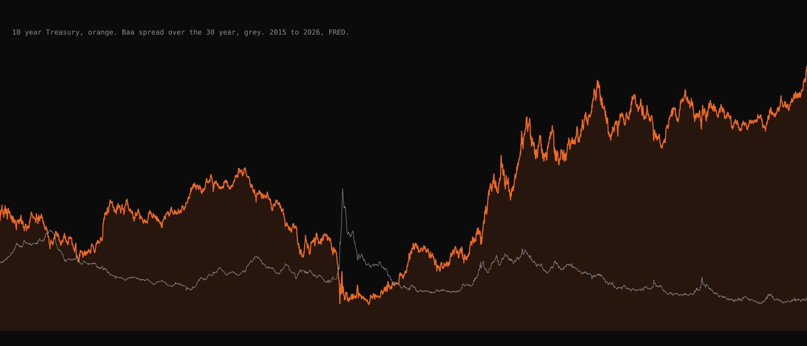

Morning Market Dashboard.

A single screen that addresses one question each morning, which is whether the new issue window is open.
The question, the method, the finding, and what it means
- The question
- When the score says the window is shut, is the next week actually worse, and do fewer deals price?
- Data and method
- The seven rules rebuilt from FRED and Yahoo closes for every morning from October 2024 to November 2026, 538 mornings, then matched against the next five days of spread moves and a public count of pricing term sheets filed on Form FWP.
- What I found
- The score read challenging on 14 mornings, 10 of them in the April 2025 tariff week. Term sheets ran at about half the normal rate on those days. However, spreads were tighter a week later on 13 of the 14. The score therefore signals at the peak, after the move has occurred.
- What it means
- The score describes current conditions and does not forecast them. It confirms that the window is shut on days when that is already visible on a screen, and it has not given a warning the week before. The more useful signal runs the other way, because the morning after a challenging reading has been followed by tighter spreads 13 times out of 14.
A score built from the inputs a syndicate desk watches
It reads Treasury yields, credit spreads, volatility and macro data from free sources and scores the window from VIX, MOVE, the one week move in IG and HY spreads, stock futures and where spreads sit in their one year range. It is built in R and rebuilds several times a day on weekdays.

The snapshot is rebuilt with the dashboard on weekdays.
I tested the score, and it measures conditions without predicting them
Mornings scored, October 10, 2024 to November 2, 2026, the span where every input has public history. Open on 76 percent of them, selective on 21, challenging on 3. Two mornings in five scored a perfect seven.
Mornings the score read challenging. Ten were April 4 to 22, 2025, the tariff week, when investment grade spreads went from 94 to 121 bp. The others were two in March 2025, August 4, 2025 and March 13, 2026.
Challenging mornings that were followed by tighter investment grade spreads over the next five trading days, by 4 bp on average and 22 bp in high yield. The one miss was April 4, the first day of the shock.
Pricing term sheets filed on Form FWP on challenging mornings, against 3.0 on open ones. On April 4, 7 and 9, 2025 there were none. Across all 538 mornings the score has no rank correlation with the count, rho 0.04.
Open mornings followed by a 5 bp or wider move in investment grade spreads within a week. The score did not warn before any of them. It has flagged a widening only after the fact and never in advance.
The day of the week moves the term sheet count more than the score does: 1.4 filings on a Friday against 3.5 midweek. An issuance model that ignores the calendar will mostly capture noise.

The score against the spread it readsOrange marks the 14 challenging mornings. They sit at the top of the April 2025 spike and do not precede it. The lower panel is the daily count of pricing term sheets on Form FWP, a public proxy for investment grade supply.
I built the score to answer a question every morning, and for a year I did not check whether the answer carried any information. I therefore rebuilt the seven rules from public history for every morning since October 2024 and asked two questions. When the score reads challenging, do spreads widen over the following week, and do fewer deals price?
The answer to the second question is a weak yes. On the 14 challenging mornings the market filed about half as many pricing term sheets as usual, and on the three worst days of April 2025 it filed none. The answer to the first question is no, and it is the more informative of the two. Spreads were tighter a week after 13 of the 14 challenging mornings. The score is built from the one week change in spreads, so it cannot signal until the widening has already happened, and by then the following week is typically the recovery. In April 2025 investment grade peaked at 121 bp on April 9, the morning the score hit zero, and was 8 bp tighter five trading days later.
In that sense the score works like a thermometer. It reports that the window is shut on mornings when a desk already knows it, and it has not once signalled shut before a widening. The more useful signal turns out to run the other way. The morning after a challenging reading has been followed by tighter spreads 13 times out of 14. If I added a fourth state to the scorecard it would be reopening, and it is the one I would most want to see.
The test has clear limits. Fourteen events is a small sample, and ten of them fall in a single week. The term sheet count captures about three filings a day against the ten or so deals the market prices, so it should be read as a proxy and not as a full tally. The MOVE index and the stock futures only have two years of public history, which is why the test starts in October 2024 and not earlier. The scoring uses the prior day's closes, which is what the dashboard sees at 7am. The backtest code is in the repo.
Free data only, and a sample portfolio
The public build uses free data feeds only. The portfolio panel on the public build is a sample book and is labeled as one. A private version on my laptop pulls Bloomberg data through the API, with ten panels on the Treasury curve, DV01, P&L and credit spreads, and refreshes every morning. That version is not published.